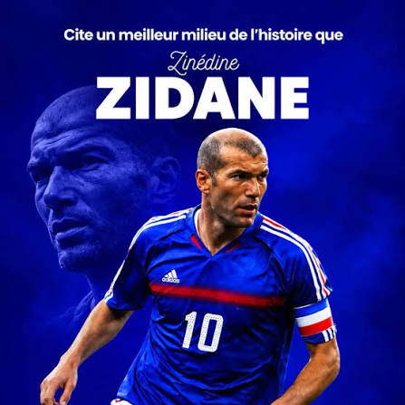

Zinedine Zidane, surnommé « Zizou », est un ancien footballeur international français, né le 23 juin 1972 à Marseille, en France. D'origine algérienne, il est considéré comme l'un des plus grands joueurs de l'histoire du football. Élégant, technique et intelligent sur le terrain, il a marqué son époque autant comme joueur que comme entraîneur
🗓️Date de naissance : 23 juin 1972
📍 Lieu de naissance : Marseille, France
Nationalité : Française
⚽ Poste : Milieu offensif